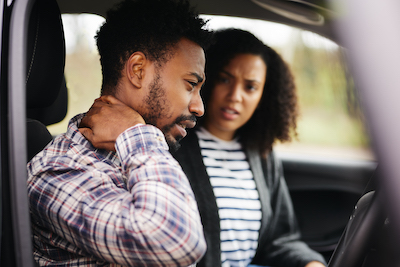

5 Immediate Steps to Take After a Car Wreck in Madison County
A car wreck can turn your day upside down in seconds. In Huntsville and throughout Madison County, busy roads, highways, and growing traffic mean accidents happen every day. When people search online for help after a crash, many are looking for a car accident lawyer near mebecause what you do in the moments after an accident can affect your health, your finances, and any personal injury claim you may need to pursue later.
At The Lackey Law Firm, we have spent decades helping individuals and families navigate what comes next after serious car accidents. We understand how overwhelming the aftermath can be, medical appointments, vehicle repairs, missed work, and insurance adjusters asking questions before you’ve had time to process what happened. Our role is to help injured people understand their rights, avoid common mistakes, and make informed decisions during a stressful time.
Every crash is different, we focus on clear guidance, honest answers, and personalized attention. Whether your injuries seem minor at first or are immediately life-altering, taking the right steps early can play an important role in protecting your health and your ability to pursue fair compensation. The steps below reflect what we consistently see matter most for people injured in Madison County car wrecks.

Step 1: Get Medical Help Immediately Even If You Feel Okay
After a car wreck in Madison County, your health should always come first. Call 911 and request medical assistance if anyone is hurt. If emergency responders arrive, allow them to examine you at the scene and follow up with a doctor or hospital as soon as possible.
Many accident injuries are not obvious right away. Whiplash, concussions, soft tissue injuries, and internal trauma can take hours or days to appear. Waiting too long to get medical care can make injuries worse and can also raise questions later if you need to file a personal injury claim.
Medical records help connect your injuries directly to the crash. Insurance companies often look for gaps in treatment to challenge claims. This documentation is important if you later work with a car accident lawyer or personal injury attorney.
Step 2: Call Law Enforcement and Get an Official Accident Report
Always contact law enforcement after a car wreck in Madison County. An officer will come to the scene, investigate what happened, and prepare an official accident report.
This report usually includes the date, time, location, parties involved, and initial observations about how the crash occurred. Insurance companies and auto accident lawyers rely heavily on these reports when evaluating claims.
Do not assume the accident is too minor to report. Without a police report, it can become much harder to prove what happened and who may be responsible.
Step 3: Document the Scene If You Are Able
If you are physically able and it is safe to do so, gather as much information as possible at the scene of the crash.
Helpful documentation includes:
- Photos of vehicle damage
- Pictures of skid marks, debris, and road conditions
- Traffic signs or signals nearby
- Visible injuries
Contact information for witnesses
This evidence can disappear quickly once vehicles are moved or the scene is cleared. A car injury lawyer can later use this information to help support your version of events.
Step 4: Be Careful What You Say to Insurance Companies
After a wreck, insurance adjusters may contact you quickly, sometimes within hours. Be polite, but cautious.
Avoid admitting fault, guessing about your injuries, or giving recorded statements without legal guidance. Even comments that seem harmless can be taken out of context and used to reduce or deny a claim.
Before having detailed conversations with an insurance company, it can help to speak with a personal injury lawyer who understands Madison County accident claims and insurance tactics.
Step 5: Speak With a Local Madison County Personal Injury Lawyer Early
Car accident claims often involve deadlines, paperwork, and insurance strategies that most people are not prepared to handle alone. Talking with a local injury lawyer early can help you understand your rights and options.
A Huntsville personal injury attorney familiar with Madison County can help by:
- Reviewing the details of your accident
- Handling communication with insurance companies
- Preserving important evidence
Explaining what compensation may be available
Getting guidance early can help prevent mistakes and give you peace of mind while you focus on your recovery.
The Importance of These Steps After a Madison County Car Wreck
Car wrecks in Madison County often involve more than just vehicle damage. With a combination of high traffic areas, major highways, and daily commuters traveling to and from Huntsville, accidents here can raise complex questions about fault and insurance coverage.
Insurance companies begin evaluating claims almost immediately after a crash. They closely review when medical care was received, whether law enforcement was called, what evidence was preserved, and what statements were made. Missing or delayed information can make it easier for insurers to dispute injuries or reduce compensation.
Taking the right steps early helps create a clear and accurate record of what happened. Medical treatment documents your injuries and links them to the wreck. Police reports provide an official account of the accident. Photos, witness information, and other evidence help show how the crash occurred and who may be responsible.
For injured drivers and passengers in Madison County, these actions can make a meaningful difference in how a personal injury claimmoves forward. By protecting your health first and preserving important information, you put yourself in a stronger position to address medical costs, lost income, and other losses related to the accident.
Learn More About Car Accident and Personal Injury Law in Madison County
Below are helpful legal resources from that explain important Alabama laws relevant to vehicle wreck claims and injury cases:
- Alabama Statute of Limitations for Personal Injury Claims
This section of the Alabama Code explains how long you have to file a lawsuit for injuries you suffered due to someone else’s negligence, such as in a car accident. Under Section 6-2-38(l), most personal injury actions must be started within two years of the date of your injury. If you wait too long and file after this deadline, you can lose your legal right to seek compensation.
- Alabama’s Contributory Negligence Rule in Personal Injury Cases
In Alabama, contributory negligence applies. That means if you are found to have contributed to your own injuries, even by a small amount, you can be barred from recovering any damages in a personal injury lawsuit. Unlike many states that use “comparative negligence,” Alabama’s rule is strict and can completely eliminate recovery if your own fault is proven.
- Alabama’s Contributory Negligence Rule in Personal Injury Cases
- Alabama Wrongful Death Law
If someone dies because of injuries from a car accident or other wrongful conduct, Alabama’s wrongful death statute (Section 6-5-410) allows a personal representative of the deceased person’s estate to file a civil claim for damages. The law also sets the time frame in which a wrongful death action must be begun and explains who may bring the case.
How Fault Is Determined in Alabama Personal Injury Lawsuits
This legal resource explains elements of proving negligence as the basis for an injury claim. To succeed in a personal injury lawsuit after a car wreck, a plaintiff generally must show that the other party owed a legal duty of care, breached that duty, caused the accident, and resulting injuries led to measurable damages. It also discusses how negligence is evaluated in court.
Using this information can help clarify important legal deadlines, rules about fault, and how Alabama law applies after a Madison County car accident. While these laws explain general legal principles, every crash involves unique circumstances, and the specific facts of an accident can significantly affect how a claim is evaluated and resolved.
Client Experience and Local Madison County Insight
Clients often tell us that one of the most helpful aspects of working with us is having a legal team that understands the area. Local roads, common accident locations, and how insurers typically handle claims in North Alabama all matter when evaluating a car wreck case.
Our firm has served individuals and families in this region for decades. That local experience helps us recognize issues that can affect a claim early, such as disputed fault, delayed symptoms, or incomplete accident reports. We focus on clear communication and making sure clients understand what is happening at each stage of the process.
Many clients also appreciate having their questions answered promptly and in plain language during a stressful time. Knowing what to expect can make the recovery process feel more manageable.
Important Follow Up Information After a Madison County Car Accident
1. What if I did not feel injured at the accident scene
It is common for symptoms to appear hours or even days after a crash. Injuries such as whiplash, concussions, and soft tissue damage are not always immediately noticeable. Seeking medical care as soon as symptoms appear helps protect your health and creates important documentation if an injury claim becomes necessary.
2. Do I need a police report if the accident seemed minor
In most situations, yes. A police report provides an official record of the accident, including the date, location, and parties involved. This documentation can be especially helpful if there is a disagreement later about how the crash happened.
3. How long do I have to take legal action after a car accident in Alabama
Alabama law generally places time limits on filing personal injury claims. Waiting too long to act can affect your ability to pursue compensation. Speaking with a personal injury lawyer early can help you understand how these deadlines apply to your situation.
4. Should I speak with the other driver’s insurance company
You may be required to report basic information, but detailed statements should be handled carefully. Insurance companies may use statements to minimize or deny claims. Many people choose to seek legal guidance before providing recorded or written statements.
5. Can I still have a claim if I was partially at fault
Alabama follows strict fault rules, which can make these cases complex. If you are found to have contributed to the accident, it may affect your ability to recover compensation. A personal injury lawyer can help explain how the law applies based on the facts of your crash.
6. What types of damages may be involved after a car wreck
Depending on the circumstances, damages may include medical expenses, lost income, property damage, and other losses related to the accident. The types of damages involved depend on the nature of the injuries and how the crash has affected your daily life.
These questions cover some of the most common concerns people have after a Madison County car accident, but they do not address every situation. Each crash involves unique facts, and how Alabama law applies can vary depending on the circumstances. Speaking with a personal injury lawyer can help clarify how these issues may affect your specific case and what steps may be appropriate moving forward.
What to Remember After a Car Accident in Madison County
✓ Get medical care as soon as possible, even if injuries are not immediately obvious. Early treatment protects your health and helps document accident related injuries.
✓ Report the accident and gather documentation. Police reports, photos, and witness information can help clarify what happened and prevent disputes later.
✓ Be cautious when speaking with insurance companies. Statements made shortly after a crash may be used to limit or deny a claim.
✓ Understanding your rights under Alabama lawand seeking guidance early can help you make informed decisions after a Madison County car accident.
Having reliable information after a car accident can make a stressful situation easier to navigate. Understanding how personal injury claims work and how injuries are evaluated under Alabama law can help individuals in Huntsville and throughout Madison County approach the next steps with greater awareness.
Reach out to us today by calling (256) 585-2980, or submit an online request to schedule a free case review and discuss your situation.